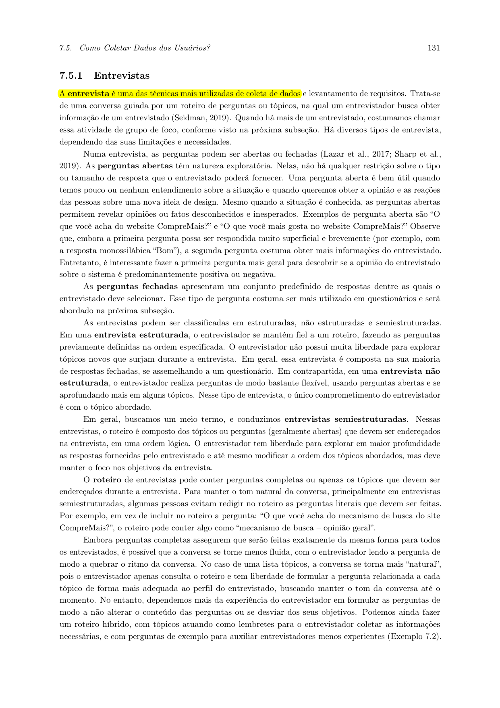
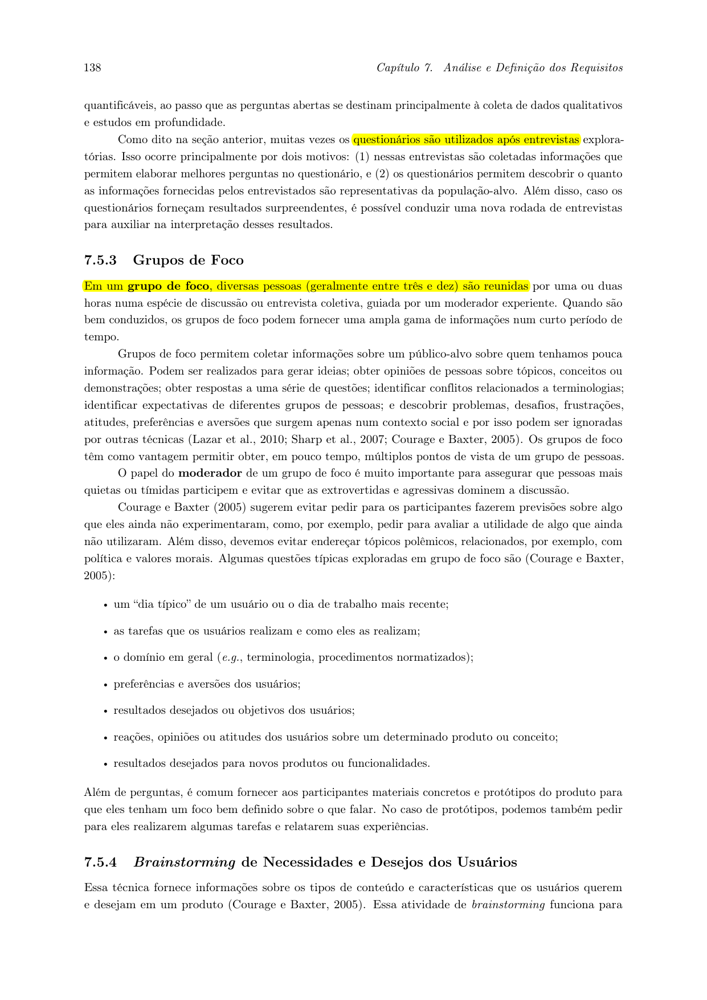
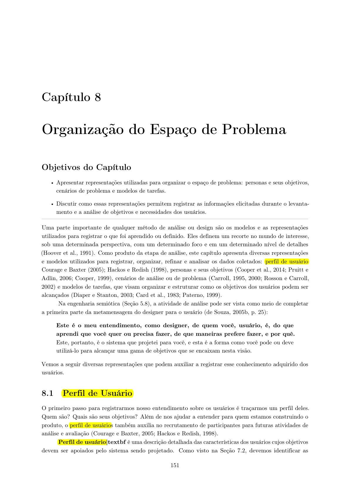

Perfil do Usuário
Tabela de Contribuição
| Integrante | Contribuição no Artefato | Data | Ferramenta de IA e Contribuição |
|---|---|---|---|
| Vinicius Silva Araruna | Estruturação metodológica e autoria do Perfil 1 (Entusiasta / Criador de Tópicos Técnicos). | 26/09/2026 | Suporte na estruturação Markdown e formatação de tabelas. |
| Edvaldo Soares Brasileiro Filho | Elaboração preliminar do Perfil 3 (Pesquisador / Buscador Autônomo), sujeita a validação com usuários. | 26/09/2026 | LLM: apoio à estruturação do rascunho e à formatação; conteúdo a ser revisado pelo autor. |
| Gustavo Antonio Rodrigues e Silva | Autoria individual do Perfil 2 (Iniciante / Onboarding). | 27/09/2026 | Gemini: apoio na estruturação dos atributos e síntese teórica, conforme informado pelo autor. |
Introdução
Este artefato apresenta a caracterização preliminar dos perfis de usuário do Fórum Diolinux Plus, no âmbito da disciplina de Interação Humano-Computador (FGA0173), ministrada pelo Prof. Dr. André Barros de Sales, na Faculdade UnB Gama (FGA/UnB).
A definição de perfis de usuário apoia a análise de requisitos e decisões de design. Barbosa e Silva (2010, p. 134–136; p. 174–176) discutem a importância de compreender os usuários, suas atividades e seu contexto de uso. Sem dados sobre o público, projetistas podem acabar tomando suas próprias experiências como referência para representar usuários diferentes.
Os perfis apresentados neste documento organizam características, objetivos e tarefas que devem orientar a investigação do projeto. As informações sem confirmação empírica estão identificadas como hipóteses ou dados a levantar e deverão ser revisadas após entrevistas e observações.
Metodologia de Elicitação e Definição
O Grupo 08 adota uma abordagem qualitativa e empírica para caracterizar os usuários do fórum:
- Brainstorming da equipe: levantamento inicial de hipóteses sobre perfis, tarefas, dificuldades e objetivos de uso.
- Entrevistas semiestruturadas: conversas com usuários iniciantes e experientes, orientadas por um roteiro flexível. A participação deve ocorrer mediante consentimento, conforme o procedimento ético definido para o projeto.
- Análise documental e observação do fórum: observação de informações públicas do Diolinux Plus, como categorias, tópicos, respostas, tags e recursos de busca. Os dados observados devem ser registrados sem atribuir características pessoais aos participantes quando elas não estiverem disponíveis.
As características descritas como hipóteses não devem ser tratadas como resultados de pesquisa. A equipe deverá confirmá-las, alterá-las ou removê-las com base nos dados coletados.
As Figuras 2 e 3 comprovam a definição bibliográfica destas técnicas de coleta de dados e elicitação no livro de Barbosa e Silva (2010), atendendo aos critérios de verificação do projeto.

Figura 2 — Trecho do livro de Barbosa e Silva detalhando a técnica de Entrevistas.

Figura 3 — Trecho do livro de Barbosa e Silva detalhando as técnicas de Grupos de Foco e Questionários.
Grupos de Atributos
Com base na caracterização de usuários discutida por Barbosa e Silva (2010, p. 134–136; p. 174–176), os perfis deste documento consideram os seguintes grupos de atributos:
- Dados demográficos e contexto: idade, ocupação, escolaridade, dispositivo, navegador, conexão e condições de uso, quando pertinentes e coletados.
- Experiência tecnológica e no domínio: experiência com Linux, terminal, fóruns, ferramentas de busca e o assunto pesquisado.
- Atitudes e estratégias: motivação, confiança, preferências de aprendizagem e estratégias usadas para realizar tarefas.
- Tarefas e objetivos: ações realizadas no fórum e resultados que a pessoa espera alcançar.
A coleta desses atributos deve se limitar ao que for útil para compreender as tarefas e necessidades do projeto. A Figura 1 comprova a definição bibliográfica destes atributos no modelo de Hackos e Redish (1998) citado por Barbosa e Silva.

Figura 1 — Trecho do livro de Barbosa e Silva detalhando os grupos de atributos de um perfil de usuário.
Caracterização dos Perfis de Usuário
Cada perfil tem um integrante responsável por sua elaboração. A equipe deverá revisar os perfis em conjunto e atualizar as caracterizações conforme os dados da pesquisa.
Perfil 1 — Usuário Entusiasta / Criador de Tópicos Técnicos
- Autor principal: Vinicius Silva Araruna
- Revisor: Gustavo Antonio Rodrigues e Silva
Este perfil representa a hipótese de um usuário que participa ativamente do fórum, criando tópicos, compartilhando tutoriais ou discutindo configurações e problemas técnicos. As características abaixo são uma caracterização inicial e precisam ser verificadas com participantes e com a observação das tarefas no fórum.
Tabela 1 — Caracterização preliminar do Perfil 1
| Dimensão de análise | Atributo investigado | Caracterização preliminar |
|---|---|---|
| Dados demográficos | Faixa etária, ocupação e escolaridade | A levantar com participantes. O perfil não pressupõe uma faixa etária ou formação específica. |
| Experiência tecnológica | Conhecimento em Linux | Hipótese de experiência intermediária ou avançada, a validar. Investigar distribuições utilizadas, tarefas realizadas e eventual uso do terminal. |
| Familiaridade com fóruns | A levantar. Investigar experiência com criação de tópicos, respostas, categorias, tags e formatação Markdown. | |
| Frequência de acesso | A levantar por entrevista ou observação. | |
| Atitudes e estratégias | Motivação | Hipótese: compartilhar conhecimento, obter ajuda técnica ou discutir soluções. |
| Tolerância a problemas técnicos | A levantar. Investigar como a pessoa procura informações e reage quando uma solução não funciona. | |
| Tarefas primárias | Criação de tópico | Descrever um problema ou compartilhar uma informação, incluindo contexto e evidências relevantes. |
| Organização da publicação | Selecionar categoria e tags e formatar texto, comandos, logs ou imagens, quando necessário. | |
| Participação em discussões | A levantar: investigar se acompanha respostas, complementa informações ou interage em tópicos de outras pessoas. |
Fonte: Elaborada por Vinicius Silva Araruna, 2026. Caracterização preliminar, sujeita à validação com usuários.
O perfil sugere investigar se os recursos de edição, pré-visualização, categorização e formatação apoiam a criação de tópicos. Essas necessidades devem ser confirmadas durante a pesquisa.
Perfil 2 — Usuário Iniciante / Migração Windows–Linux
- Autor principal: Gustavo Antonio Rodrigues e Silva
- Revisor: Edvaldo Soares Brasileiro Filho
Este perfil representa a hipótese de uma pessoa com pouca experiência em Linux ou em processo de migração de outro sistema operacional. Ela pode recorrer ao fórum para buscar orientação sobre instalação, configuração, compatibilidade de hardware ou alternativas a programas conhecidos. As características abaixo não devem ser interpretadas como dados observados até que sejam confirmadas por entrevistas ou observação.
Tabela 2 — Caracterização preliminar do Perfil 2
| Dimensão de análise | Atributo investigado | Caracterização preliminar |
|---|---|---|
| Dados demográficos | Faixa etária, ocupação e escolaridade | A levantar com participantes. Não há dados disponíveis para definir uma faixa etária ou formação. |
| Experiência tecnológica | Conhecimento em Linux | Hipótese: inicial ou limitado para a tarefa investigada. Confirmar com os participantes; não presumir que toda pessoa iniciante evita o terminal. |
| Familiaridade com fóruns | A levantar. Investigar experiência com busca, criação de tópicos, categorias, tags e leitura de respostas. | |
| Formatação de conteúdo | A levantar. Verificar se a pessoa sabe incluir mensagens de erro, comandos ou capturas de tela. | |
| Frequência de acesso | A levantar. | |
| Atitudes e estratégias | Motivação | Hipótese: resolver uma dúvida ou realizar uma tarefa específica durante o uso ou a migração para Linux. |
| Preferência de aprendizagem | A levantar. Investigar preferência por instruções passo a passo, vídeos, explicações conceituais ou experimentação. | |
| Reação a erros | A levantar. Investigar que informações ajudam a pessoa a compreender e resolver um problema. | |
| Tarefas primárias | Busca de orientação | Pesquisar dúvidas sobre instalação, configuração, hardware ou programas. |
| Avaliação de instruções | Identificar se uma orientação corresponde à distribuição, versão e situação da pessoa. | |
| Pedido de ajuda | Quando necessário, descrever o problema e fornecer informações que ajudem a comunidade a responder. |
Fonte: Elaborada por Gustavo Antonio Rodrigues e Silva, 2026. Caracterização preliminar, sujeita à validação com usuários.
O perfil indica investigar se as pessoas compreendem as instruções, identificam quando uma solução se aplica ao seu contexto e conseguem descrever o problema ao pedir ajuda. Necessidades como linguagem acessível, exemplos e instruções graduais devem ser avaliadas com os participantes.
Perfil 3 — Usuário Pesquisador / Buscador Autônomo
- Autor principal: Edvaldo Soares Brasileiro Filho
- Revisor: Vinicius Silva Araruna
Este perfil representa pessoas que acessam o Fórum Diolinux Plus para localizar informações ou soluções relacionadas a Linux, software livre ou tecnologia. Antes de publicar uma pergunta, esse usuário pode pesquisar discussões existentes, examinar resultados e avaliar se alguma resposta atende à sua necessidade.
A busca autônoma é o foco deste perfil; ela não pressupõe que a pessoa conheça os filtros ou a sintaxe de pesquisa do Discourse. O nível de experiência com Linux, fóruns e ferramentas de busca deverá ser caracterizado a partir dos dados coletados. Barbosa e Silva (2010, p. 134–136; p. 174–176) orientam a compreender usuários, atividades e contexto e a refinar a caracterização conforme a investigação avança.
Tabela 3 — Caracterização preliminar do Perfil 3
| Dimensão de análise | Atributo investigado | Caracterização preliminar |
|---|---|---|
| Dados demográficos | Faixa etária, ocupação e escolaridade | A levantar com participantes. |
| Contexto de acesso | A levantar, incluindo dispositivo, navegador, conexão e condições de uso. | |
| Experiência tecnológica | Experiência com computadores e Internet | A levantar; investigar ferramentas utilizadas e frequência de uso. |
| Conhecimento em Linux | Variável e a levantar. Pesquisar sobre Linux não significa necessariamente ser especialista no sistema. | |
| Familiaridade com fóruns e buscas | A levantar; verificar experiência com tópicos, respostas, categorias, tags e filtros. | |
| Conhecimento do domínio | Conhecimento sobre o assunto pesquisado | Pode variar conforme a dúvida. Investigar se a pessoa está aprendendo ou buscando informação em uma área que já conhece. |
| Vocabulário utilizado | A levantar a partir das consultas dos participantes; pode incluir distribuições, programas, dispositivos ou mensagens de erro. | |
| Atitudes e estratégias | Motivação de acesso | Hipótese a validar: resolver uma necessidade ou aprender sobre um assunto consultando informações existentes antes de perguntar à comunidade. |
| Estratégia de aprendizagem | A levantar; investigar se prefere testar soluções, ler tutoriais, comparar respostas ou pedir ajuda. | |
| Confiança nos resultados | A levantar; verificar como avalia clareza, atualidade, relevância e confiabilidade das respostas. | |
| Tarefas primárias | Busca de informação | Formular uma consulta relacionada à necessidade e examinar os resultados. |
| Avaliação dos resultados | Comparar títulos, categorias, datas e conteúdo das discussões para selecionar resultados pertinentes. | |
| Verificação de solução | Ler respostas e verificar se alguma atende à necessidade e parece aplicável ao contexto. | |
| Tarefas secundárias | Refinamento da busca | Alterar termos ou aplicar/remover filtros quando os resultados iniciais não forem suficientes. |
| Participação na comunidade | Hipótese a validar: acompanhar ou responder a uma discussão; criar tópico quando a busca não encontrar resposta adequada. | |
| Necessidades de interação | Compreensão dos resultados | Investigar se títulos e contexto dos resultados permitem decidir quais discussões abrir. |
| Refinamento da consulta | Investigar se filtros e opções de ordenação são compreensíveis e se os critérios ativos ficam claros. | |
| Avaliação da informação | Investigar quais informações ajudam a avaliar relevância e atualidade, como data, categoria e eventual indicação de solução. | |
| Dificuldades e consequências | Formulação e refinamento da busca | Hipóteses a validar: dificuldade para escolher termos específicos, entender filtros ou combinar critérios. |
| Seleção de resultados | Hipótese a validar: dificuldade para diferenciar resultados semelhantes ou avaliar se uma discussão antiga ainda se aplica. | |
| Resultados irrelevantes ou desatualizados | Investigar se geram retrabalho, orientação inadequada ou desistência e com que frequência. | |
| Frequência e duração | Frequência e duração das buscas | A levantar por entrevista ou observação. |
| Importância da tarefa | Relacionada ao objetivo que motivou o acesso; urgência e importância devem ser investigadas em cada contexto. |
Fonte: Elaborada por Edvaldo Soares Brasileiro Filho, 2026. Caracterização preliminar, sujeita à validação com usuários.
O perfil orienta a investigação de como as pessoas localizam discussões, compreendem os resultados e avaliam se uma resposta atende à necessidade. Entrevistas e observação da tarefa de busca devem confirmar ou revisar as hipóteses, especialmente sobre experiência com Linux, hábitos de pesquisa, uso de filtros e critérios de confiança.
Questões para validação nas entrevistas
- Antes de publicar uma pergunta, como você tenta encontrar uma resposta no fórum?
- Que palavras costuma usar na busca? Como decide se deve alterar os termos?
- Você usa filtros? Quais? Como entende o efeito de cada um?
- Como decide quais resultados abrir e se uma resposta é confiável e atual?
- Quando a busca não resolve sua necessidade, o que faz em seguida?
Matriz Comparativa e Síntese dos Perfis
A Tabela 4 resume o foco de cada perfil e indica quais informações ainda precisam ser investigadas. Ela não substitui as caracterizações completas das seções anteriores.
Tabela 4 — Matriz comparativa dos perfis de usuário do Fórum Diolinux Plus
| Critério de comparação | Perfil 1 — Entusiasta / Criador | Perfil 2 — Iniciante / Onboarding | Perfil 3 — Pesquisador / Buscador |
|---|---|---|---|
| Autor responsável | Vinicius Silva Araruna | Gustavo Antonio Rodrigues e Silva | Edvaldo Soares Brasileiro Filho |
| Experiência em Linux | A investigar; hipótese de experiência intermediária ou avançada. | A investigar; hipótese de experiência inicial para a tarefa. | Variável; a investigar conforme o assunto pesquisado. |
| Foco de uso | Criar tópicos, compartilhar informações e participar de discussões. | Buscar orientação e realizar tarefas durante o aprendizado ou migração. | Localizar, avaliar e refinar resultados de busca. |
| Motivação | Hipótese: compartilhar conhecimento ou obter ajuda técnica. | Hipótese: resolver uma dúvida ou realizar uma tarefa específica. | Hipótese: localizar informação antes de perguntar à comunidade. |
| Fluxo principal | Preparar e publicar um tópico. | Buscar orientação, avaliar instruções e, se necessário, pedir ajuda. | Buscar, avaliar e refinar resultados. |
| Dados a validar | Experiência, frequência de participação e necessidades de publicação. | Experiência, estratégias de aprendizagem e dificuldades ao pedir ajuda. | Hábitos de busca, uso de filtros e critérios de confiança. |
Fonte: Elaborada pelos autores, 2026. Síntese de caracterizações preliminares.
A comparação evidencia três focos de uso que devem ser investigados: criação de conteúdo, busca de orientação e pesquisa autônoma de informações existentes. A equipe deverá revisar essa matriz após a coleta e análise dos dados, sem tratar as hipóteses como características confirmadas.
Histórico de Versões
A Tabela 5 registra as versões do artefato.
Tabela 5 — Histórico de versões
| Versão | Data | Descrição | Autor(es) | Revisor(es) |
|---|---|---|---|---|
1.0 |
26/09/2026 | Estruturação metodológica e elaboração preliminar do Perfil 1. | Vinicius Silva Araruna | Edvaldo Soares Brasileiro Filho |
1.1 |
26/09/2026 | Inclusão do rascunho preliminar do Perfil 3, sujeito a validação com usuários. | Edvaldo Soares Brasileiro Filho | Vinicius Silva Araruna |
1.2 |
27/09/2026 | Inclusão do Perfil 2 e atualização da matriz comparativa. | Gustavo Antonio Rodrigues e Silva | Edvaldo Soares Brasileiro Filho |
Fonte: Elaborada pelos autores, 2026.
Referências Bibliográficas
[1] BARBOSA, Simone Diniz Junqueira; SILVA, Bruno Santana da. Interação Humano-Computador. 1. ed. Rio de Janeiro: Elsevier, 2010.
[2] BARBOSA, Simone Diniz Junqueira et al. Interação Humano-Computador e Experiência do Usuário. 1. ed. Rio de Janeiro: Autopublicação, 2021.
[3] COURAGE, Catherine; BAXTER, Kathy. Understanding your users: A practical guide to user requirements methods, tools, and techniques. San Francisco: Morgan Kaufmann Publishers, 2005.
[4] HACKOS, JoAnn T.; REDISH, Janice C. User and task analysis for interface design. New York: John Wiley & Sons, 1998.
[5] SALES, André Barros de. Plano de Ensino da Disciplina de Interação Humano-Computador. Brasília: Universidade de Brasília, Faculdade UnB Gama, 2026.
Agradecimentos e Uso de Inteligência Artificial Generativa
Durante a preparação deste artefato, foram utilizados recursos de Inteligência Artificial Generativa para apoio à estruturação de rascunhos, organização do conteúdo e formatação Markdown, conforme indicado na tabela de contribuição. A autoria, a revisão e a validação das informações são responsabilidades dos integrantes identificados neste documento. As hipóteses ainda não validadas estão explicitamente indicadas como preliminares.